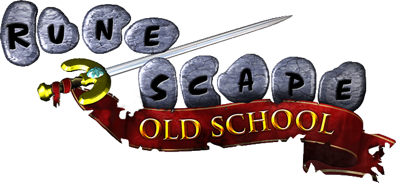

This is one of those games that seems to always find a way into my life even after taking numerous breaks. With Riot Games(creator of League of Legends, also known as, LoL) creating new characters every year, there's always someone new you want to play with. LoL is a 5v5 game based around controlling a character called champions in an objective based mode. Each team has a Nexus with towers down 3 lanes that plays can play in. You must destroy the towers in a lane in order to get to the opposing team's Nexus and finally destroy their Nexus in order to win. Your champion has abilities that you can use to help you defeat your enemy's champions as well as various item combinations to make your champion stronger. Varus is currently my favorite champion to play in LoL. He is an archer based around inflicting your enemy with these marks called Blights and using your other abilities to proc or trigger those blights for extra damage. He has a high damage output and great utility but lacks a way to disengage from team fights or an easy escape thus granting him a high risk, high reward playstyle.

OSRS is a game I've been playing since I was in 6th grade. This was the first experience I had with playing with other players on a server. It shaped my childhood in the way that I was able to make friends with people around the world through this game. The game is an MMO based around you controlling and leveling your character through various quests, skills, and monster based challenges. The game has evolved throughout the years and is now 2 different games. Runescape 3 is the current updated version whereas OSRS is a game mode that has been brought back from the early to late 2000s due to popularity.

Apex Legends is a first person shooter battle royale gamemode that was released by EA 2 years ago. It's a game with characters called Legends who land in a huge arena, scavenge for weapons, armor, medical supplies, and brawl it out with other teams of 3s in order to become the champion / winner. There are currently 16 different Legends each with their own abilities playstyles and building a team that offsets your other members' weaknesses is important. I have put in countless hours these past 2 years with this game and nothing gets my heart pumping more when its just you and another team in a 3v3 fight to determine who will be the champion.